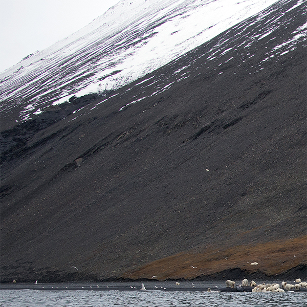
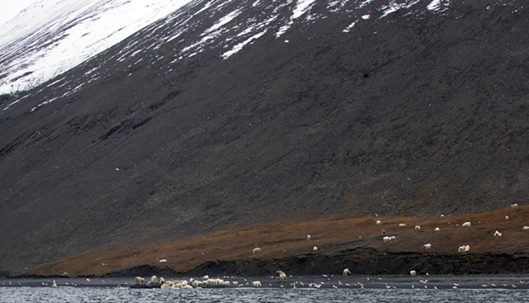

Wrangle Island
Russian far-east, inside the arctic circle

Russian far-east, inside the arctic circle
Polar bears had come to feast on the carcass of a bowhead whale

In the crowd there were many families, including two mothers trailed by a rare four cubs each
"It was a completely unique situation," said Alexander Gruzdev, director of the Wrangel Island nature reserve where the encounter in September happened. "We were all gobsmacked, to be honest."
Studies have shown that, compared with 20 years ago, polar bears now spend on average a month longer on Wrangel Island because "ice is melting earlier and the ice-free period is longer," said Eric Regehr, from the University of Washington